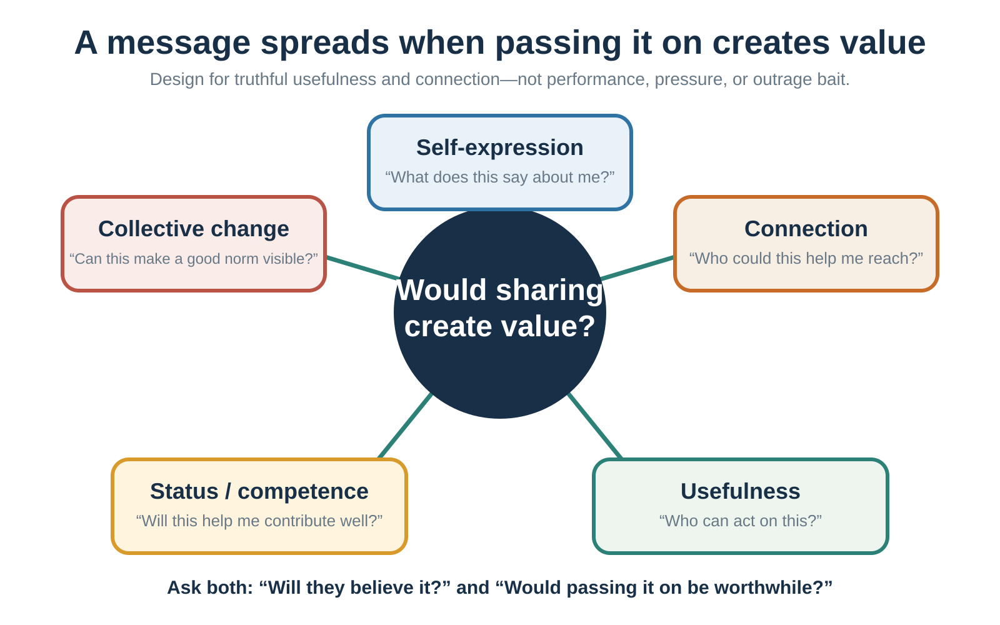

26 Building an Evidence-Aligned Story
ABT, STORY, evidence, applications, and ethics
Learning goals
- Use ABT and STORY as drafting tools.
- Integrate narrative with an evidence ladder.
- Adapt story to identity, resistance, and context.
- Identify ethical failures such as false causality, stereotype reinforcement, and manufactured urgency.
Many weak arguments fail because they begin with what the speaker wants to say rather than with what the audience currently believes. A conventional argument asks: What information do I want to deliver? A narrative persuasion approach asks: What belief does the audience currently hold, why does that belief make sense to them, what resistance prevents change, and what story would allow them to experience the limits of that belief?
The audience already has a story. They have beliefs about what is normal, fair, risky, trustworthy, costly, and possible. They have identities they are protecting and losses they fear. A story that ignores the audience’s current worldview may be rejected before it is understood. Good persuasion begins inside the audience’s model, then shows where that model stops working.
Design the change
Begin with the audience’s current story
Begin by identifying what the audience currently believes. This belief may be explicit or implicit. Examples include: “Good decisions come from careful reasoning.” “If people know the facts, they will change.” “Innovation begins with a great idea.” “Bias is something that happens to other people.” “Customers choose the product with the best objective value.” “Data-driven decision-making means surveillance.” “Negotiation is about defending positions.”
A persuasive story begins where the audience is, not where the speaker wishes they were. This is empathy, not manipulation. To change someone’s mind, begin inside the story they already use to make sense of the world.
Protagonist, goal, and stakes
A persuasive story needs a protagonist. The protagonist can be a patient, customer, employee, scientist, student, manager, parent, entrepreneur, citizen, negotiator, team, organization, community, or even a field of research. But the audience needs someone through whom to experience the situation.
The protagonist must want something. Without a goal, there is no story movement. The goal can be external - get treatment, launch a product, pass an exam, save money, negotiate agreement, reduce emissions, protect a team, survive a crisis. It can also be internal - preserve dignity, be seen as competent, belong, avoid shame, regain control, become honest, or act courageously.
Stakes answer why the goal matters. What happens if the protagonist fails? What is lost? Who is affected? Why now? Weak version: “A company needed to improve innovation.” Stronger version: “A family-owned company had survived for thirty years by relying on craftsmanship and flexibility. But as older experts approached retirement, the knowledge that made the company special was at risk of disappearing.” The stronger version gives the audience something to care about.
Conflict, obstacle, and misbelief
Conflict is the engine of persuasion. It does not require melodrama. Conflict is the gap between desire and obstacle. The obstacle may be external, internal, interpersonal, institutional, or moral. External obstacles include money, time, tools, information, access, or opportunity. Internal obstacles include fear, shame, habit, craving, misbelief, identity threat, and overconfidence. Interpersonal obstacles include mistrust, competing interests, status threats, and social norms. Institutional obstacles include incentives, bureaucracy, metrics, silos, and culture. Moral obstacles include competing values and trade-offs.
The deepest persuasive stories do not merely show the protagonist receiving information. They show the protagonist’s old belief becoming less workable and a new belief becoming more adaptive. A manager’s misbelief may be, “If I ask for input, I will look weak.” A student’s misbelief may be, “If I do not understand immediately, I am not smart.” A negotiator’s misbelief may be, “If I reveal interests, I will be exploited.” A patient’s misbelief may be, “If I avoid the test, I avoid the disease.” An organization’s misbelief may be, “Our culture is already transparent because leaders are approachable.”
Persuasion occurs when reality pressures that misbelief.
Turning point, evidence, and change
A turning point is not merely an event. It is an event that forces reinterpretation. The dashboard that everyone ignored reveals that the problem was trust, not technology. The structured interview reveals that intuition was responding to confidence, not evidence. The data pattern reveals that a team has a decision problem, not a data problem. The negotiation question reveals that the deadline is about reassurance, not stubbornness.
A persuasive story then needs evidence. Evidence shows that the story is not just an anecdote. It can take the form of data, research, comparison cases, mechanism, repeated interviews, prototype tests, behavior patterns, or credible expert knowledge. Evidence is not the enemy of story. It is what keeps story from becoming manipulation.
Finally, something must change. The protagonist acts differently, sees differently, or chooses differently. The audience should not merely feel something; they should see differently. The new model may be a concept, framework, theory, principle, behavior, or decision rule.
Practical story tools

Story is most useful here not as performance theater but as a practical tool for ethical model updating. Three tools are especially useful: ABT, STORY, and SUCCESs. ABT gives the smallest causal spine. STORY gives a fuller pitch framework. SUCCESs is a post-draft editing checklist that improves clarity and memory.
The STORY framework
In entrepreneurship and applied persuasion, a longer structure is often needed. The STORY framework can be used in two closely related versions. In a business pitch, S often stands for stakeholder. In broader persuasive communication, S can stand for shared reality. The logic is the same: start from the audience’s decision, not from your information.
A one-sentence STORY pitch can be written as: For [specific stakeholder] trying to [goal], [trouble] causes [cost, risk, or frustration], but [change or insight] creates a new opportunity; therefore [solution or idea] creates [value], supported by [evidence], and asks for [specific next step].
| Letter | Function | Test |
|---|---|---|
| S · Shared reality | Start with an accepted goal, behavior, change, or constraint. | Is the opening recognizable without jargon or a claim the audience already rejects? |
| T · Trouble | Reveal the contradiction that makes the old model fail. | Are the pain, change, and stakes real and proportionate? |
| O · Opportunity | Explain the better model or mechanism of progress. | Does it resolve this trouble, rather than merely advertise a feature? |
| R · Reasons | Supply behavior, trials, comparison, mechanism, transparent numbers, uncertainty, and relevant source or team fit. | Is the proof concrete and difficult to fake, and does it match the claim? |
| Y · Yes | Ask for a specific decision or next step. | Who does what, by when, at what cost—and can the audience genuinely decline? |
STORY extends ABT rather than replacing it. Shared reality corresponds to AND; Trouble supplies the governing BUT; Opportunity begins THEREFORE; Reasons make the proposed update safer; Yes turns agreement into a decision. It is an instructor framework for drafting, not a validated psychological law.
For an illustrative restaurant-forecasting pitch, the moves could be: S—independent restaurants already use point-of-sale and ordering tools; T—owners still have to guess daily preparation, so overestimates waste food and underestimates lose sales; O—a forecasting assistant turns existing sales history into preparation recommendations; R—report only verified pilot behavior, comparisons, uncertainty, and limits; Y—invite a defined number of eligible restaurants to a time-bounded pilot with stated success criteria. The sequence is reusable; any traction number must be real, sourced, and appropriate to the claim.
This structure prevents two common failures. First, it prevents product-first or speaker-first communication. The audience does not begin by caring what you built, what you know, or how impressive you are. It begins by caring about its own decision, risk, values, and cost of action. Second, STORY prevents evidence from becoming a data dump. A number should change what the audience believes about the story. If a statistic does not change the story, it is probably decoration.
The evidence ladder
Story opens attention; proof earns trust. A practical evidence ladder helps move the weakest important claim one level higher. In a business pitch, “customers want this” is an assertion. One named customer story is better, but still weak. A repeated pattern across interviews is stronger. A prototype or demo shows that the mechanism works in practice. Traction shows that users pay, return, refer, or expand. Economics shows that the model can create and capture value.
The story tells us which claim matters. The evidence ladder tells us how risky that claim still is.
Fluency: power and danger
Cognitive ease matters because messages are processed under limited attention. Legible structure, repeated core phrases, familiar words, and concrete language can reduce confusion and suspicion. This is not “dumbing down.” It is respecting the audience’s limited attention.
But ease is dangerous when it helps falsehood travel. Repetition can make claims feel familiar. Familiarity can feel like truth. Rhymes, simple slogans, vivid images, and fluent stories can make weak evidence feel stronger than it is. Ethical persuasion makes true things easier to understand, not false things easier to believe.
SUCCES is an editing pass, not the evidence
After the ABT/STORY spine is truthful, the practitioner checklist SUCCES can reduce friction and improve recall (Heath & Heath, 2007):
| Check | Useful move | Ethical boundary |
|---|---|---|
| Simple | Remove unnecessary complexity and find the core. | Do not remove necessary assumptions, uncertainty, or trade-offs. |
| Unexpected | Open a relevant expectation gap, then resolve it. | Surprise without relevance is noise; unresolved surprise is confusion. |
| Concrete | Use observable people, actions, objects, comparisons, and consequences. | Vividness must make claims easier to check, not make an exception feel typical. |
| Credible | Match transparent sources, comparisons, demonstrations, and uncertainty to the claim. | Credentials, confidence, and production quality are not substitutes for evidence. |
| Emotional | Show why accurate evidence matters to human goals and values. | Intensity should not exceed probability, scope, or stakes. |
| Stories | Simulate goals, obstacles, choices, identity, and change. | A coherent case does not prove representativeness or causality. |
Fluent names, short words, legible visuals, clean structure, and repeated core ideas can ease processing, but ease can be misread as truth, quality, or trust (Hasher et al., 1977; Reber et al., 2004; Fazio et al., 2015). Even in financial settings, easier-to-pronounce company names and ticker codes were associated with very short-run IPO performance in one laboratory-and-field program, an effect that diminished beyond the first day in the ticker analysis (Alter & Oppenheimer, 2006). That is evidence that labels can influence early processing—not an investment rule or proof of lasting value. An unresolved, decision-relevant information gap can also create curiosity (Loewenstein, 1994); the ethical obligation is to resolve the gap rather than use suspense to conceal a weak claim. Memorability is not validity.
The story-evidence braid
Some people distrust storytelling because stories can mislead. This concern is justified. A vivid anecdote can overpower base rates. A single emotional case can distort policy judgment. A manipulative story can hide weak evidence. A memorable narrative can make false claims feel true.
Narrative evidence is most defensible when a case is connected to representative data rather than allowed to substitute for base rates (Small et al., 2007; Slovic, 2007; Dahlstrom, 2014).
But the solution is not to abandon story. The solution is to integrate story and evidence responsibly.
Evidence without story can be ignored. Story without evidence can mislead. Story with evidence can make truth usable.
A useful structure is: story, evidence, mechanism, implication, return to story. Begin with a concrete situation that creates curiosity. Use evidence to show that the situation represents a broader pattern. Explain the mechanism that connects the story to the evidence. Translate the insight into action. Return to the story so the audience can see what the evidence means in lived experience.
For example, a public health message might begin with a patient who misses a screening appointment because the reminder letter is confusing and frightening. Evidence shows that missed appointments are common, especially among patients facing administrative burdens. Mechanism explains how complexity, fear, and friction reduce follow-through. Solution proposes simplified reminders, easy rescheduling, and planning prompts. The story resolves when the redesigned system helps the patient attend. The story does not replace the evidence. It makes the evidence psychologically available.
Use data to show scale; use story to show meaning. Data answers: How common is this? How large is the effect? How reliable is the pattern? Story answers: What does this mean in lived experience? Why should we care? How does the mechanism unfold? What action becomes possible?
Applications across domains
Teaching and academic writing
Academic writing often underuses story because it fears appearing unscientific. But story does not require exaggeration or sentimentality. A scientific argument can use narrative structure while preserving rigor. A strong academic chapter can be organized as a story of intellectual discovery: a field begins with a dominant assumption, an anomaly appears, existing theories struggle to explain it, researchers develop new models, evidence accumulates, the field’s understanding changes, and new questions emerge.
For example, a chapter on heuristics and biases can be written as a narrative of changing assumptions about rationality. A chapter on predictive processing can be written as a story about the movement from perception as passive reception to perception as active inference. A chapter on habits can be written as a story about the limits of conscious intention.
In teaching, story creates intellectual need. Do not merely explain the concept. Tell the story of why the concept is needed. Instead of beginning with the definition of loss aversion, begin with a person who refuses to sell a stock at a loss while ignoring better investment opportunities. Instead of beginning with base rates, begin with a doctor facing a positive test result and a patient asking, “Do I have the disease?” Instead of beginning with two systems of thinking, begin with the bat-and-ball problem, where intuition gives a fluent but wrong answer. Instead of beginning with decision hygiene, begin with two reviewers giving opposite recommendations on the same paper.
A good classroom story should be concrete enough to imagine, short enough not to dominate, tied to a clear concept, designed around a decision or puzzle, and followed by analysis. Story should create the need for theory, not substitute for theory.
Leadership and change
Leaders often try to change organizations through plans, metrics, and directives. These are necessary, but not sufficient. Organizational change requires people to revise shared meaning. A new strategy asks people to stop doing some things and start doing others. That threatens habits, status, identity, competence, and belonging. A spreadsheet cannot fully address those concerns. A story can.
Employees want to know: Why must we change? Why now? What is wrong with the old way? What happens if we do not change? What will be lost? What will be protected? What will this require of people like me? What does success look like in everyday behavior? What kind of organization are we becoming?
Leadership stories can answer these questions. A burning-platform story explains why the status quo is no longer safe, but it should be used carefully because exaggerated fear destroys trust. A bridge story connects old identity to new direction: we are not abandoning who we are; we are preserving what matters by changing how we work. A future-in-action story shows what the desired future looks like in a specific behavior.
Instead of saying, “We need knowledge sharing,” a leader might tell a story about a machine breakdown that only one technician knew how to fix, and how the team realized that expertise locked in one person’s head was not resilience. The story honors the expert and reframes documentation not as bureaucracy but as protecting craftsmanship.
Instead of saying, “We need psychological safety,” a leader might tell a story about a junior employee who noticed a flaw but stayed silent because previous warnings had been dismissed. The story makes silence visible.
Leadership stories should not be propaganda. They should name real tensions, acknowledge loss, explain trade-offs, connect to values, and identify credible action. A story without obstacles feels like a slogan. A credible change story acknowledges that change costs something.
Marketing and entrepreneurship
Marketing often fails when it makes the product or organization the hero. A product-centered message says: “Our platform integrates data across departments.” A story-centered message asks: What problem does the customer face, what future do they want, what obstacle blocks them, and how does the product help them move forward?
This is the central insight of Storynomics. The customer is usually the protagonist. The product is not the story; it is part of the customer’s story. A software company could say, “Our platform integrates data across departments.” That is accurate but abstract. A story version might say: “A project manager spends every Monday morning reconciling numbers from three departments. Finance has one version, sales has another, and operations has a third. By the time the team agrees on what happened last week, it is too late to make a good decision for this week. The platform gives them one shared view before the meeting begins.” The story shows pain, obstacle, cost of inaction, and value of the solution.
Entrepreneurs face a special persuasion problem. They must persuade before the future is observable. Customers must believe the product solves a real problem before they have tried it. Investors must believe the venture can become valuable before the numbers exist. Partners must believe cooperation is worth scarce attention and resources. Employees must believe the mission and upside justify uncertainty.
A startup pitch is therefore a structured answer to uncertainty: Why should I believe, care, trust, and act now? A strong entrepreneurial story does not begin with the founder’s passion. It begins with the stakeholder’s trouble.
In a pitch, confidence without evidence becomes hype; evidence without conviction becomes a report. A good pitch combines story, proof, and a specific ask. It explains the stakeholder, trouble, opportunity, resolution, and yes. It also names uncertainty honestly. Investors and partners often ask prevention questions because they are managing risk: How big is the market? Why will customers switch? Why can’t incumbents copy? What if the technology fails? What do you need the money for? The persuasive answer addresses the risk behind the question, then bridges back to the opportunity story.
Science, health, and policy
Science communicates through evidence, models, uncertainty, and mechanisms. Public understanding often requires narrative. A story can help non-expert audiences understand causality, consequences, and relevance. Antibiotic resistance can be explained through molecular mechanisms, but a story about a patient whose infection no longer responds to common antibiotics, connected to the mechanism of overuse and bacterial evolution, makes the issue concrete. Climate change can be explained through atmospheric physics, but stories about farmers, coastal communities, insurance markets, heat waves, and infrastructure make consequences visible.
Health communication often uses patient narratives because narratives can increase attention, comprehension, recall, and emotional engagement. They may be especially useful when audiences face fear, low literacy, mistrust, or low perceived relevance. But health narratives must be used carefully. A rare side-effect story can deter beneficial treatment. A miracle recovery story can create false hope. A personal testimonial can be powerful even when scientifically weak.
Policy communication faces similar risks. A story about one family harmed by regulation may obscure broader benefits. A story about one person helped by a program may obscure inefficiency or unintended consequences. A story about one crime may distort perceptions of crime rates. Responsible policy stories should be accurate, representative when used for general claims, connected to scale, and honest about trade-offs.
Stories in negotiation
Negotiation is a contest of stories. Each side has a story about what happened, what is fair, what the other side wants, who has been reasonable, and what agreement would mean. A price is not just a number. It signals respect, value, power, fairness, and relationship. A concession is not just movement. It can mean flexibility, weakness, goodwill, or strategic retreat. A deadline can mean urgency, pressure, manipulation, production risk, or symbolic seriousness.
Good negotiators use stories to explain interests, not just positions. Instead of saying, “We need delivery by June 1,” a negotiator might explain: “Our production line shuts down on June 5 if the component is not installed. A delay would force us to cancel customer orders and send workers home.” The story reveals why the date matters and may open creative solutions.
Stories can humanize constraints. An employee can tell a story about childcare scheduling that makes flexibility meaningful. A supplier can tell a story about previous last-minute changes that created costly disruptions, explaining why predictability matters. Stories can reframe conflict: a dispute over penalties can become a story about trust, risk, and performance confidence. Stories can also help parties imagine a shared future: What would success look like six months after this agreement?
But stories in negotiation must be used carefully. A manipulative sob story can backfire. A blame story can harden conflict. A story that reveals vulnerability without strategic thought can be exploited. The best negotiation stories are specific, honest, and linked to interests.
A useful negotiation question is: What story is the other side telling itself about fairness? If you do not understand that story, your arguments may miss. If you can respectfully reshape that story, persuasion becomes possible.
Ethics and common failure modes
Ethical storytelling
Stories can enlighten, but they can also manipulate. A vivid story can make rare events seem common. A heroic story can justify reckless action. A victim story can erase broader statistics. A national story can dehumanize outsiders. A brand story can manufacture identity anxiety. A political story can turn complexity into scapegoating. A personal story can be used to silence structural analysis. A success story can create survivorship bias.
Narrative persuasion is dangerous when it helps people see one thing by making everything else disappear. Because stories work through emotion, identification, and simulated experience, they can narrow critical scrutiny. Ethical storytelling is therefore not a decorative final topic. It is part of responsible message design.
Common mistakes
Worked transformations
From argument to story
Suppose you want to persuade readers of this claim: habits are not simply repeated choices; they are cue-triggered behavioral patterns shaped by context and reward. A purely explanatory paragraph might define habits, cite studies, and describe cue-routine-reward loops. That is useful, but it may not persuade readers who believe behavior is mainly a matter of willpower.
A story-based approach proceeds differently. First, identify the existing belief: “If I really wanted to change, I would just choose differently.” Second, identify the resistance: people fear that explaining behavior through habit undermines responsibility. Third, create a protagonist: a professor wants to stop checking email late at night. Fourth, introduce the pattern: after putting his child to bed, he sits on the sofa “just for five minutes,” the phone is nearby, a notification appears, and thirty minutes disappear. Fifth, show failed effort: he tells himself to be disciplined, deletes the app, reinstalls it, feels guilty, and repeats the behavior. Sixth, reveal the new model: the problem is not simply weak willpower. The environment contains cue, routine, and reward: fatigue, phone visibility, notification, professional anxiety, and relief. Seventh, translate to action: he charges the phone outside the living room, turns off notifications, and creates a replacement routine. The behavior changes not because his character changed, but because the cue structure changed.
Now the concept becomes persuasive. The story allows readers to experience the limits of the willpower model before introducing the habit model.
Worked example: structured hiring
Persuasive goal: convince managers to use structured hiring interviews.
Information-only version: “Structured interviews have higher validity than unstructured interviews. They reduce bias and noise by asking comparable questions and using predefined criteria.”
Story version: Maria had hired dozens of people and believed she was good at reading candidates. In one interview, a candidate from a familiar university spoke confidently about teamwork and leadership. Maria felt an immediate connection. Another candidate was quieter, less polished, and from an institution Maria did not know well. The team hired the first candidate. Six months later, performance problems appeared: missed deadlines, poor collaboration, and resistance to feedback. During a later review, Maria reread the interview notes and realized there were almost none. She had recorded impressions, not evidence. When the company introduced structured interviews, she resisted at first. They felt mechanical. But after using the same job-relevant questions and scoring evidence separately, she noticed something uncomfortable: her “intuition” had often been confidence responding to confidence. The structure did not replace her judgment. It gave her judgment something better to work with.
This story begins inside the manager’s existing belief: “I can read people.” It introduces conflict: intuitive confidence produces error. It creates a turning point: rereading the notes reveals the absence of evidence. It offers a new model: structure improves judgment rather than replacing it. It then prepares the audience to accept the research.
Worked example: behavior change
Persuasive goal: show that motivation alone is not enough for behavior change.
Information-only version: “Behavior depends on motivation, ability, and prompt. Because motivation fluctuates, behavior change should focus on making actions easier and attaching them to reliable cues.”
Story version: Jonas wanted to start running. Every Sunday night he promised himself that Monday would be different. He imagined waking early, running five kilometers, showering, and beginning work energized. On Monday morning, the alarm sounded. It was dark. His shoes were in the hallway closet. He did not know where his running shirt was. His phone was next to the bed. Ten minutes later, he was reading messages. By breakfast, he felt he had failed again.
Then he changed the problem. Instead of trying to become a runner at 6 a.m., he made the first behavior tiny. After brushing his teeth, he would put on running shoes. That was all. The first morning felt almost silly. But he did it. He smiled and said, “I showed up.” The next day he stepped outside. A week later, he walked around the block. The change began not with stronger motivation but with a smaller action and a clearer cue.
This story persuades because the audience recognizes the old pattern. It dramatizes the new principle: design beats self-blame.
Worked example: data-driven decision-making
Persuasive goal: show that data alone do not improve decisions unless judgment systems change.
Information-only version: “Data-driven decision-making requires not only access to data but also decision processes that clarify goals, interpret evidence, reduce bias, and support learning.”
Story version: The leadership team had finally built the dashboard they wanted. Sales, costs, customer satisfaction, churn, productivity, and employee engagement appeared in real time. For the first month, everyone was impressed. By the third month, meetings had become worse. Each manager picked the number that supported their prior view. Sales pointed to revenue. Operations pointed to cost. HR pointed to burnout risk. The CEO asked for “more data.”
The turning point came when a junior analyst said, “We do not have a data problem. We have a decision problem.” The team began each meeting by writing the decision question first, then listing what evidence would matter, what base rates applied, and what would change their minds. The dashboard did not become less important. It became useful only when placed inside a better judgment process.
This story challenges a common misbelief: more data automatically means better decisions. It shows the inner shift from data accumulation to decision hygiene.
Worked example: negotiation deadline
Persuasive goal: explain why a delivery deadline matters without making it sound like an arbitrary demand.
Information-only version: “We need delivery by June 1.”
Story version: Last year, a component arrived four days late. The delay looked small on paper. But the production line had been scheduled tightly, customers had already booked installation dates, and workers were assigned to shifts that depended on the component arriving. By June 5, the line was stopped, customer orders were rescheduled, and the team had to explain a preventable delay. This year, the June 1 date is not a preference; it is the point that keeps the rest of the system from failing. We are willing to discuss price, batch size, or earlier partial delivery, but we need a plan that protects that date.
This story explains an interest without revealing a reservation value. It humanizes the constraint and opens problem-solving rather than simply asserting a position.
Advanced craft and judgment
Story under information overload
Modern audiences face too much information. They filter aggressively. Attention is scarce and trust is fragile. This is one reason storytelling has become central in business, education, politics, science communication, leadership, marketing, public health, and negotiation.
The solution is not to make every message emotional or dramatic. The solution is to make communication meaningful. Story helps because it organizes information around human intention, conflict, causality, and consequence.
In an information-rich world, the question is not only: Is this true? It is also: Why should anyone care, remember, and act on it? A story answers by showing relevance. It does not merely claim importance; it demonstrates importance through experience.
The strongest persuasion often combines narrative and analysis: story creates curiosity, concept explains what happened, evidence shows the pattern is not isolated, implication shows what should change, and return to story reinterprets the opening case through the new model. This structure respects both the narrative mind and the analytical mind. It does not force a false choice between story and science.
Familiarity plus surprise
Raymond Loewy’s design principle MAYA—most advanced yet acceptable—also applies to persuasive stories. A story that is too familiar may be boring because it creates no update. A story that is too strange may be rejected because the audience cannot enter it. Good persuasion often combines familiarity with surprise. It starts inside the audience’s current model and then introduces a discrepancy that is close enough to understand but strong enough to matter.
In storytelling terms, familiarity gives the audience a door. Surprise gives them a reason to walk through it. A public-health story about screening is stronger when the protagonist is not a cartoon of irresponsibility, but a recognizable person facing fear, inconvenience, family obligations, and uncertainty. The surprise is not that the person is foolish. The surprise is that good intentions can fail when the system makes action hard.
The evidence behind MAYA is narrower than the slogan. Industrial-design studies suggest that typicality and novelty can jointly predict aesthetic preference; fluency contributes to affective response; and exposure can change the relative appeal of typical and atypical designs (Hekkert et al., 2003; Landwehr et al., 2011, 2013; Reber et al., 2004). These findings do not prove that every familiar policy, product, or argument persuades. They motivate a conditional design heuristic: preserve enough category grammar to make the proposal legible, then change the claim, mechanism, or value that matters.
A practical sequence is: anchor in a familiar category, add one meaningful novelty, let people try or imagine it at low stakes, and allow repeated exposure when learning is needed. An unfamiliar device can be introduced as a known tool plus one capability; a habit can attach to an existing routine; a health change can preserve a familiar meal format; an AI assistant can be framed as a drafting partner rather than a mysterious replacement; and an organizational process can retain familiar roles while changing the evidence required at each checkpoint. The extension from product aesthetics to behavior and organizational change is an analogy, not an identical empirical effect. Large mismatches may be discounted when credibility, identity, or comprehension is weak; they are not automatically “disregarded.”
Numbers, images, metaphors, and scale
Numbers alone often fail because people struggle to feel scale. This does not make numbers unimportant. It means numbers need representation. A statement such as “the richest 1% own 31% of the wealth” may be accurate, but many listeners cannot picture the distribution. A metaphor can translate scale: imagine a 100-apartment building in which one person owns 31 apartments, ten people own 70 apartments, and the bottom half share only a tiny fraction of the building. The image does not replace the statistic. It makes the statistic imaginable.
Metaphor also frames causal models. In the classic crime-metaphor example, crime described as a wild beast invites capture and punishment, whereas crime described as a virus invites diagnosis, prevention, and treatment of conditions. Both metaphors may highlight something real, but each also hides something. A beast metaphor can hide social causes; a virus metaphor can hide agency and harm. Ethical metaphor use requires asking what the metaphor makes visible and what it makes invisible.
Vivid images work for the same reason. A horse-sized syringe, for example, can make an otherwise abstract scale immediately perceptible. The craft lesson is not to exaggerate. It is to convert abstraction into perception. If the audience cannot see, hear, feel, or imagine the implication, the message may remain inert.
Responsible compassion
The identifiable-victim effect is often illustrated with a named-child charity example: people may respond more strongly to one identifiable person than to statistics about many thousands. This chapter has already discussed the identifiable-victim effect and psychic numbing. The practical response is to combine compassion with scale. A story of one person can open the heart; evidence must then show how that person connects to the broader pattern.
A related scope-insensitivity demonstration asked respondents about preventing the deaths of 2,000, 20,000, or 200,000 migratory birds in oil ponds; stated willingness to pay changed little across those magnitudes in that contingent-valuation setting (Desvousges et al., 1993). Treat the example as a warning about how difficult scale can be to represent, not as proof that numbers never matter or that an image is always superior. Better communication makes the denominator, comparison, and uncertainty imaginable while keeping them visible.
A responsible humanitarian message might say: “This is one person’s story, and it is one window into a broader problem affecting many people.” An irresponsible message lets the audience infer that the most vivid case is the typical case, or lets one moving story determine policy without base rates, comparison cases, or unintended consequences. Ethical storytelling does not ask us to feel less. It asks us to connect feeling to proportion.
Associative backfire
A message can activate the very association it tries to defeat. A campaign attacking a slogan may repeat the opponent’s slogan so vividly that the opponent’s frame becomes more memorable. A phrase such as “Make America Sick Again” can unintentionally pair one’s own side with sickness because the mind often keeps the image after it forgets the negation. The shift from “Don’t be evil” to “Do the right thing” illustrates a related principle: negated frames can still keep unwanted concepts active.
The same risk appears in storytelling. Graphic descriptions, humiliating examples, or vivid depictions of harmful behavior can make the wrong image travel. Fear appeals can capture attention but collapse agency. A story about cheating may accidentally teach methods. A story about corruption may make corruption feel normal. Before using a vivid story, ask: what picture, emotion, and association will remain in the audience after the argument fades?
Concrete writing
A practical writing rule follows: use strong verbs and nouns; minimize empty adjectives. “Innovative” is weak when it floats alone. It becomes stronger when the writer shows what is new, who benefits, what obstacle was overcome, and what changed. “Customer-centric” is weak when it is a label. It becomes stronger when a story shows an employee solving a customer’s problem differently because the organization changed authority, information, or incentives.
The same applies to academic writing. “Important,” “complex,” “significant,” and “transformative” are often claims waiting for stories. The writer should ask: important for whom, complex in what way, significant compared with what, and transformative because what changed? Concrete verbs and nouns force causal clarity.
Why people pass a message on
Persuasion does not end when one audience member understands. Some messages are retold, forwarded, demonstrated, or turned into a visible norm. Research on information transmission suggests that people evaluate not only the content’s value to themselves but also the social value of sharing it (Berger & Milkman, 2012; Falk et al., 2013; Baek et al., 2017).

| Sharing motive | Question in the sharer’s value calculation | Ethical design implication |
|---|---|---|
| Self-expression | What does sharing say about me? | Make the idea identity-expressive without demanding public performance. |
| Connection | Who will this help me connect with? | Make sharing a bridge to a real person or community. |
| Usefulness | Who could use this? | Make the benefit concrete, accurate, and transferable. |
| Status or competence | Will I look informed, capable, or caring? | Support reputation honestly; avoid superiority and outrage bait. |
| Collective change | Can this make a better norm visible? | Make the desired behavior observable and actionable. |
The distinction prevents a common design error. “Will they believe it?” is not the same question as “Would they feel value in passing it on?” A technically credible message may remain private because it is difficult to explain, socially risky, or not useful to anyone specific. A highly shareable message may spread because it flatters identity or provokes outrage even when it is false. Ethical message design has to satisfy both tests: it should be worth believing and worth transmitting.
Identity can also make people diverge rather than conform. Consumers were more likely to avoid majority-associated choices in domains that communicated identity, such as music or hairstyles, than in less identity-signaling domains (Berger & Heath, 2007). The implication is not “use identity to win.” It is to ask whether sharing, adopting, or rejecting the message would place the audience inside an identity it values or an identity it is trying to avoid—and to keep that social meaning separate from whether the claim is true.
That final distinction has an empirical warning. In a large analysis of Twitter diffusion, false news traveled farther, faster, deeper, and more broadly than true news in the studied data (Vosoughi et al., 2018). The study does not show that every false claim outperforms every truth or that one mechanism explains all platforms. It does show that contagion is not a truth test. Optimize for accuracy and inspectability before reach.
Story as a technology of meaning
Storytelling is not merely a communication technique. It is a technology of meaning. It helps people attend, care, imagine, remember, and act. It is persuasive because it fits how people make sense of reality: through agents, goals, obstacles, emotions, causes, consequences, identity, and change.
For decision-making, storytelling is especially important because decisions are rarely made in response to facts alone. People decide within narratives about who they are, what matters, what is possible, what others expect, and what future they want to avoid or create.
The practical lesson is simple but profound: do not merely tell readers what is true. Help them experience why the truth matters.
A persuasive story begins with the audience’s current model of reality. It introduces a meaningful disruption. It follows a protagonist through conflict and choice. It reveals the limitations of the old model. It offers a better model. It grounds that model in evidence. And it invites the audience to carry the new model into their own decisions.
Used ethically, story does not weaken reason. It gives reason a human form.
| Form | What it does | Example | Limitation |
|---|---|---|---|
| Information | States facts, events, features, dates, or numbers. | “Employee engagement increased by 12%.” | May not show why the change was difficult or meaningful. |
| Example | Clarifies a concept by illustrating it. | “Netflix is an example of business-model innovation.” | May not create tension, cause, stakes, or transformation. |
| Anecdote | Provides a vivid individual case. | “One customer waited three hours and gave up.” | Can be unrepresentative and can overpower base rates. |
| Case | Describes a real or hypothetical situation for analysis. | A company adopts a feedback system and engagement rises. | May remain descriptive unless it shows inner conflict and meaning change. |
| Story | Shows motivated action under constraint and change through cause and consequence. | Sara resists anonymous feedback, sees that her competence has become a bottleneck, changes her meeting ritual, and creates a habit of honesty. | Can mislead if causality, evidence, or representativeness is distorted. |
| Principle | Guiding question | Warning sign |
|---|---|---|
| Truthfulness | Is the story factual, composite, or fictional, and is that clear? | Invented realism or altered key facts. |
| Representativeness | Does the case reflect a broader pattern supported by evidence? | Anecdote pretending to be a base rate. |
| Dignity | Are people more than props, victims, villains, or stereotypes? | Humans reduced to symbols or emotional instruments. |
| Complexity | Is causality simplified without becoming false? | One villain explains everything. |
| Transparency | Does the audience know what kind of story this is? | Composite or illustrative stories presented as single real cases. |
| Evidence alignment | Does the story illuminate evidence rather than replace it? | The story is used to hide weak or missing evidence. |
| Agency | Does the story expand action possibilities? | Fear, shame, or identity threat without a path forward. |
| Plurality | Are important missing perspectives acknowledged? | The story prevents the audience from seeing anything else. |
| Proportion | Does emotional force match the real significance of the issue? | Rare cases presented as common without scale. |
| Actionability | Does the story point toward a meaningful response? | Distress without a credible path. |
Key ideas
- A persuasive story begins in the audience’s current model, creates meaningful trouble, follows a protagonist through choice and consequence, and resolves in a new model supported by proportionate evidence and an actionable next step.
- Use ABT and STORY as drafting tools.
- Integrate narrative with an evidence ladder.
- Adapt story to identity, resistance, and context.
Study and practice
How would you use ABT and STORY as drafting tools in practice?
How can narrative be integrated with an evidence ladder without turning an anecdote into proof?
How should a story adapt to identity, resistance, and context while keeping disagreement possible?
References cited in this chapter
Baek, E. C., Scholz, C., O’Donnell, M. B., & Falk, E. B. (2017). The value of sharing information: A neural account of information transmission. Psychological Science, 28(7), 851–861.
Alter, A. L., & Oppenheimer, D. M. (2006). Predicting short-term stock fluctuations by using processing fluency. Proceedings of the National Academy of Sciences, 103(24), 9369–9372.
Berger, J., & Milkman, K. L. (2012). What makes online content viral? Journal of Marketing Research, 49(2), 192–205.
Berger, J., & Heath, C. (2007). Where consumers diverge from others: Identity signaling and product domains. Journal of Consumer Research, 34(2), 121–134.
Fazio, L. K., Brashier, N. M., Payne, B. K., & Marsh, E. J. (2015). Knowledge does not protect against illusory truth. Journal of Experimental Psychology: General, 144(5), 993–1002.
Dahlstrom, M. F. (2014). Using narratives and storytelling to communicate science with nonexpert audiences. Proceedings of the National Academy of Sciences, 111(Suppl. 4), 13614-13620.
Desvousges, W. H., Johnson, F. R., Dunford, R. W., Wilson, K. N., & Boyle, K. J. (1993). Measuring natural resource damages with contingent valuation. In J. A. Hausman (Ed.), Contingent valuation: A critical assessment (pp. 91–164). North-Holland.
Falk, E. B., Morelli, S. A., Welborn, B. L., Dambacher, K., & Lieberman, M. D. (2013). Creating buzz: The neural correlates of effective message propagation. Psychological Science, 24(7), 1234–1242.
Heath, C., & Heath, D. (2007). Made to stick: Why some ideas survive and others die. Random House.
Hasher, L., Goldstein, D., & Toppino, T. (1977). Frequency and the conference of referential validity. Journal of Verbal Learning and Verbal Behavior, 16(1), 107–112.
Hekkert, P., Snelders, D., & van Wieringen, P. C. W. (2003). Most advanced, yet acceptable: Typicality and novelty as joint predictors of aesthetic preference in industrial design. British Journal of Psychology, 94(1), 111–124.
Landwehr, J. R., Labroo, A. A., & Herrmann, A. (2011). Gut liking for the ordinary: Incorporating design fluency improves automobile sales forecasts. Marketing Science, 30(3), 416–429.
Landwehr, J. R., Wentzel, D., & Herrmann, A. (2013). Product design for the long run: Consumer responses to typical and atypical designs at different stages of exposure. Journal of Marketing, 77(5), 92–107.
Loewenstein, G. (1994). The psychology of curiosity: A review and reinterpretation. Psychological Bulletin, 116(1), 75–98.
Reber, R., Schwarz, N., & Winkielman, P. (2004). Processing fluency and aesthetic pleasure: Is beauty in the perceiver’s processing experience? Personality and Social Psychology Review, 8(4), 364–382.
Slovic, P. (2007). If I look at the mass I will never act: Psychic numbing and genocide. Judgment and Decision Making, 2(2), 79-95.
Small, D. A., Loewenstein, G., & Slovic, P. (2007). Sympathy and callousness: The impact of deliberative thought on donations to identifiable and statistical victims. Organizational Behavior and Human Decision Processes, 102(2), 143-153.
Sopory, P., & Dillard, J. P. (2002). The persuasive effects of metaphor: A meta-analysis. Human Communication Research, 28(3), 382–419.
Vosoughi, S., Roy, D., & Aral, S. (2018). The spread of true and false news online. Science, 359(6380), 1146–1151.